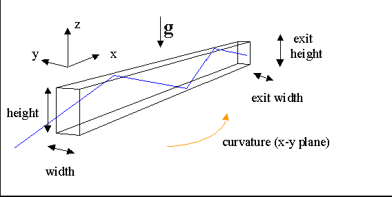

The module guide simulates the neutron flight path through a
mirrored guide calculating the intensity loss for each reflection (in dependence
of the neutron wavelength and the incident angle). It can be straight, diverging
or converging, or consist of several straight parts that form a polygon
section with a certain curvature. It can also consist of several vertical
channels (bender option). In this case, the module bender must
be used.
Subsequent modules always refer to the new origin, which is defined
as the middle of the exit window. It is generated automatically by the
program, also in the case of curvature (the orientation of the frame follows
the curvature).

The effect of gravity is considered in this module, if this option is chosen. Trajectories with a probability/count rate less than the 'minimal weight' are taken out of the simulation.
The guide consists of one or several planar pieces. The number of pieces and the length of each piece are input parameters. Each piece may be converging or diverging. Elliptical and parabolic guide shapes can be chosen; these shapes are approached by several planar pieces. Converging and diverging as well as guides of constant cross-section can be simulated as one piece. Convergence or divergence is then defined by input and output width and height. This is identical to using several pieces if there is no abutment loss (see Table below) included and runs faster. Special guide shapes can be realized using the option 'shape from file' that allows any symmetric shape and an individual coating for each piece.
A curved guide is described by a polygon. In this case, a radius of curvature (unequal zero) must be given. The co-ordinate system is rotated by an angle
beta = 2.0*arcsin(length/(2*radius))
between two succeeding pieces. The first piece is aligned to the preceding module, the last piece is aligned to the following module. The algorithm used here works properly only for guides with constant width. Therefore the combination of curvature and horizontal converging/diverging is not supported!
Each piece is described by 5 planes: left, right, top , bottom and exit. Each plane is described by an equation of first order:
ax + by + cz + d = 0
The coefficients a,b,c,d are calculated from guide length as well as width
and height of entrance and exit. The trajectory is calculated until the
exit plane is reached, taking into account the intensity loss for each reflection.
A warning is given, if a trajectory is found out of the exit area.
If the real guide does not consist of straight pieces, a large number of pieces must be used for a good simulation. Alternatively, the module 'bender' can be used. The module 'bender' uses arcs instead of planes for the surface of the guide.
mirr0.dat: absorbing coating (reflectivity = 0.0)The reflectivity file contains the probability of reflection in dependence of the incident angle for neutrons with a wavelength of 1 Å. Each row contains 10 data points and covers 0.01 deg, i.e. each point gives the probability average over an angular interval of 0.001 deg (the second row covers 0.01-0.02 deg a.s.o.). The number of data points may vary between 1 and 1000. If end of file is reached (e.g. only 52 values are given) the probability to reflect 1 Å neutrons for higher angles is set to 0. If no reflectivity file is given as an input, the guide operates in total absorption mode, i.e. each neutron hitting a guide wall is lost.
mirr1a.dat: Ni coating (theta_Ni = 0.099138 deg/Å*lambda)
mirr1b.dat: Ni-58 coating (theta_Ni-58 = 0.11456 deg/Å*lambda)
mirr2linear.dat: supermirror coating,
reflectivity 0.99 -> 0.9 from theta_Ni to 2 theta_Ni; cutoff at 2 theta_Ni;
mirr30opt.dat: supermirror coating,
reflectivity 0.99 -> 0.80 from theta_Ni to 3 theta_Ni; cutoff at 3 theta_Ni;
mirr30std.dat: supermirror coating,
reflectivity 0.99 -> 0.75 from theta_Ni to 3 theta_Ni; cutoff at 3 theta_Ni;
mirr3sn.dat: supermirror coating of Swiss Neutronics,
reflectivity 0.99 -> 0.88 from theta_Ni to 3 theta_Ni; cutoff at 3 theta_Ni;
mirr4.dat: supermirror coating,
reflectivity 0.99 -> 0.80 from theta_Ni to 4 theta_Ni; cutoff at 4 theta_Ni;
mirr5.dat: supermirror coating,
reflectivity 0.99 -> 0.71 from theta_Ni to 5 theta_Ni; cutoff at 4 theta_Ni;
mirr6.dat: supermirror coating,
reflectivity 0.99 -> 0.53 from theta_Ni to 6 theta_Ni; cutoff at 4 theta_Ni;
mirr23FeCo.dat: supermirror coating of FeCo-Si,
reflectivity 0.99 -> 0.77 from theta_Ni to 2.3 theta_Ni; cutoff at 2.3 theta_Ni;
| Parameter Unit |
Description | Command option |
| Horizontal / vertical shape |
shape of the guide: constant: same cross-section on the whole length (usually 1 piece) linear : linearly converging or diverging between entrance and exit (usually 1 piece) curved (only in horizontal plane): several pieces form part of a regular polygon . The first piece is aligned to the preceding, the last to the succeeding module. The radius of the circle through the polygon corners and the number or pieces need to be given. parabolic: the guide consists of several straight pieces that approach a parabola, which is defined by entrance and exit width. The number or pieces need to be given. elliptic: the guide consists of several straight pieces that approach an ellipse, which is defined by entrance and exit width, and an angle describing the position of the ellipse. This angle and the number or pieces need to be given (see below). from file: the guide consists of several straight pieces of that might have different length and different coating and can be converging or diverging. Each piece is described by one line in the file; the parameters that have to be given are: Position, width and height of the beginning of the piece, reflectivity files for left, right, top and bottom plane. |
-Y, -Z |
| guide shape | for 'shape from file': input file for shape and coating of the file (see example below) otherwise: output file into which position, width and height if each piece is written |
-S |
| entrance width, height [cm] |
size of the guide entrance (in y- and z-direction) | -w, -h |
| exit width, height [cm] |
size of the guide exit (in y- and z-direction) | -W, -H |
| piece length [cm] |
length of one piece of the guide | -p |
| number of pieces | number of pieces that build the polygon section | -n |
| total scattering [1/cm] |
macroscopic total scattering cross-section of the gas in the guide | -M |
| absorption [1/cm] |
macroscopic absorption cross-section of the gas in the guide | -m |
| left, right, top/bottom plane | reflectivity file for the coating of the guide on the inner side (left), on the outer side (right), on the top and on the bottom plane. If no file for the bottom plane is given, the file of the top plane is used for the bottom. |
-i, -I, -j, -J |
| number of channels | number of vertical channels, into which the guide is divided | -b |
| blade thickness [cm] |
thickness of the material that separates two neighbouring channels | -s |
| curvature (radius) [m] |
radius of a circle through the polygon; for a straight guide: radius = 0 or nothing | -R |
| focus dist. of ellipse [cm] |
only needed for elliptic shape: The elliptical shape of the guide is defined by 3 parameters: the entrance width/height, the exit widht/height and the distance from the guide exit to the (2nd) focal point in horizontal/vertical direction. This distance has to be given here. All other parameters are calculated, some are given in the log file. |
-f, -F |
| Add to color | Add value to neutron color on each reflection. | -A |
| Additional plane angle [deg] |
Adds additional planes by rotating the top/bottom or left/right planes by the given angle around the x axis. If the angle is positive the top/bottom planes are duplicated. For negative angles the left/right planes are duplicated. The reflectivity files are taken from the original plane and may not be altered seperately. The height and width still define the outer dimensions. Example: 45 means an octagon shape by copying the top/bottom planes and rotating them by 45 deg around the x axis. -60 gives a hexagon with plain top/bottom and declined left/right walls. | -n |
| abutment loss | yes: neutrons that hit the surface close to one of the ends of the guide (or a guide segment) are removed. no: neutrons are treated with the given reflectivity in the whole guide |
-a |
| abutment loss area cm |
Neutrons hitting the surface in a range of this length around the connection of guide segments are removed | -l |
| waviness distr. | Distribution of waviness: rectangular or Gaussian (waviness is the deviation from a perfectly plane surface of the inner guide surface) |
-q |
| surface waviness [deg] |
amplitude of waviness For a rectangular distribution, this value is the maximal angle of deviation of the surface normal from the ideal normal. For a Gaussian distribution, this is the RMS value. |
-r |
| Parameter Unit |
Description | Command option |
| filename | Give the output filename to activate the evaluation on a reflection base. The reflections are saved with parameters like position, divergency, ... along the guide. | -o |
| format | Choose which trajectories will be printed. This option also affects
reflection plot options below!!! 1 = only those leaving the guide 2 = all successfull reflections; no matter if the trajectory reaches the guide end 3 = only those with at least one successful scattering event (tracjectory may end with an unsuccessfull event) 4 = all A negative number adds a line feed between each trajectory. |
-O |
| verbose list | Trajectories are written for each reflection (yes) and the end & exit and at the end of each guide piece (no). | -v |
| number of reflections | The evaluation can be restrained to a number of reflections the neutron has to have. The range can be given for any, for horizonal or vertical direction. |
-e, -E, -c, -C, -d, -D |
| Parameter Unit |
Description | Command option |
| filename | Giving the filename for saving all reflections for plotting x, m, intensity, wavelength along the guide will activate the evaluation. | -P |
| format | Choose which trajectories will be binned. This option is also affectd by
format option above!!! 0 = all events; 1 = only scattered neutrons; 2 = only died neutrons. |
-B |
| X, Y, Weight values | Choose the property for the x and y bin and the weighting. Any choice is possible.
If only a 1D binning is needed choose any second parameter. The output will contain a 2D binning and a 1D binning for each X and Y parameter (see sections in output file ==XData== and ==YData==). |
-t, -T -V |
| number of bins in X, Y | The number of bins determines the segmentation of the X and Y interval. | -k, -K |
| minimum and maximum X, Y | Lower (minimum) and upper (maximum) bounds of the evaluation intervals for X and Y. | -x, -X -u, -U |
|
# |
Label |
Description |
|
1 |
____ID____ |
Constant ID for each neutron, e.g. AA000000001. |
|
2 |
Scattered |
Did a (reflection) event occur in the guide
peace? |
|
3 |
plane |
Indicating the super-mirror plane of the event. See Table Reflection plot. |
|
4 |
refangle |
Angle of incidence (in degree). |
|
5 |
m_Ni |
Needed mc to have a successful reflection. |
|
6 |
reflectivity |
Reflectivity as used from mirror-file. |
|
7/8 |
DivY/DivZ |
Horizontal and vertical divergence in degree. |
|
9-22 |
Like output of writeout module column 2-15. See also Reflection plot. |
|
A detailed description of this option will be published in 2012.
The following table is taken from this publication and shows the colums of the output file:
|
# |
Label |
Type |
Description |
|
1 |
X |
|
Center of x-bin. |
|
2 |
Y |
|
Center of y-bin. |
|
3 |
counts |
C |
Number of events in bin. |
|
4 |
Mode |
S |
Similar to column "Scattered" in "Reflection list&qout;. The columns sum up or count the number of neutrons that are scattered,
passed or died in this bin. |
|
5 |
0 |
C |
|
|
6 |
5 |
C |
|
|
7 |
10 |
C |
|
|
8 |
RefCount |
A |
Averaged over current reflection counter property for any direction (RefCount) or y/z direction of all neutrons in the bin. |
|
9 |
RCy |
A |
|
|
10 |
RCz |
A |
|
|
11 |
____ID____ |
1N |
Constant ID for each neutron, e.g. AA000000001. |
|
12 |
plane |
1N |
Indicating the super-mirror plane of the event. The number of planes is depending on the "additional planes option" (s. text). The maximal value n is equal to the number of planes and indicates the exit window: 0 = top; 1 = bottom; 2 = left; 3 = right; <n = other planes; n = exit window. |
|
13 |
refangle |
A |
Angle of incidence (in degree). |
|
14 |
m_Ni |
A |
Needed mc to have a successful reflection. |
|
15 |
reflectivity |
A |
Reflectivity as used from mirror-file. |
|
16/17 |
DivY/DivZ |
A |
Horizontal and vertical divergence in degree. |
|
18 |
Trc |
1N |
Was the neutron traced? T = Tracing; N = Not. |
|
19 |
color |
A |
For arbitrary use. |
|
20 |
TOF |
A |
Total neutron time in ms. |
|
21 |
lambda |
A |
Neutron wavelength in Å. |
|
22 |
count rate |
S |
Neutron probability = count rate in n/s. |
|
23-25 |
pos_x,y,z |
A |
Coordinates within guide in cm. |
|
26-28 |
dir_x,y,z |
A |
Flight direction as direction cosinus. |
|
29-31 |
sp_x,y,z |
A |
Spin components. |
|
32 |
WeightSum |
S |
Sum over weighting channel. |
# position [m] width [cm] height [cm] coating L coating R coating T coating B
#-------------------------------------------------------------------------------------------
0.000 12.007 12.007 m60w.dat m60w.dat m60w.dat m60w.dat
0.137 12.692 12.692 m60w.dat m60w.dat m60w.dat m60w.dat
0.294 13.424 13.424 m60w.dat m60w.dat m60w.dat m60w.dat
0.471 14.205 14.205 m60w.dat m60w.dat m60w.dat m60w.dat
0.674 15.037 15.037 m60w.dat m60w.dat m60w.dat m60w.dat
0.904 15.923 15.923 m60w.dat m60w.dat m60w.dat m60w.dat
1.165 16.864 16.864 m60w.dat m60w.dat m60w.dat m60w.dat
1.463 17.862 17.862 m60w.dat m60w.dat m60w.dat m60w.dat
1.801 18.919 18.919 m60w.dat m60w.dat m60w.dat m60w.dat
2.186 20.035 20.035 m60w.dat m60w.dat m60w.dat m60w.dat
2.624 21.211 21.211 m60w.dat m60w.dat m60w.dat m60w.dat
3.122 22.447 22.447 m60w.dat m60w.dat m60w.dat m60w.dat
3.688 23.742 23.742 m60w.dat m60w.dat m60w.dat m60w.dat
4.332 25.093 25.093 m60w.dat m60w.dat m60w.dat m60w.dat
5.065 26.496 26.496 m60w.dat m60w.dat m60w.dat m60w.dat
5.899 27.946 27.946 m30w.dat m30w.dat m30w.dat m30w.dat
6.847 29.434 29.434 m30w.dat m30w.dat m30w.dat m30w.dat
7.925 30.948 30.948 m30w.dat m30w.dat m30w.dat m30w.dat
9.151 32.471 32.471 m30w.dat m30w.dat m30w.dat m30w.dat
10.546 33.980 33.980 m30w.dat m30w.dat m30w.dat m30w.dat
12.133 35.444 35.444 m30w.dat m30w.dat m30w.dat m30w.dat
13.937 36.824 36.824 m30w.dat m30w.dat m30w.dat m30w.dat
15.990 38.061 38.061 m30w.dat m30w.dat m30w.dat m30w.dat
18.324 39.080 39.080 m30w.dat m30w.dat m30w.dat m30w.dat
20.980 39.775 39.775 m30w.dat m30w.dat m30w.dat m30w.dat
24.000 39.995 39.995 m30w.dat m30w.dat m30w.dat m30w.dat